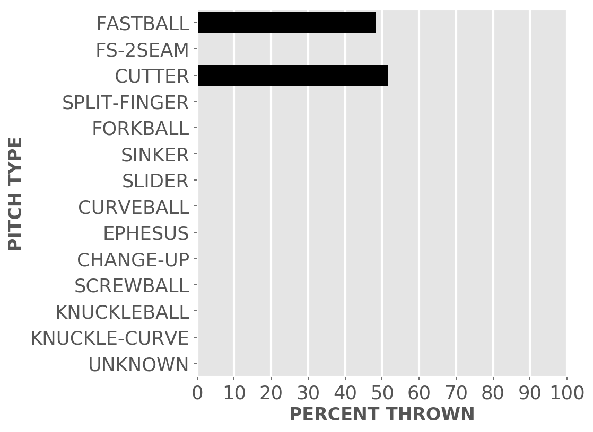

Chicago baseball
White Sox
A little-more-than-casual but not-very-wonky statistical look at the current season
Plenty of seats available to watch the kids learn how to play in the big league.
Updated Sunday, April 7, at 9:03 a.m. Pybaseball gathers these from Baseball-reference.com.
Games
JUMP TO TOP | BATTERS | PITCHERS
On Saturday, Apr 6, the Sox lost a day game at home against the Mariners, 2 to 9, in 9 innings. The winning pitcher was Leake, losing pitcher was Giolito. Save: None.
Next scheduled game: Sunday, Apr 7, a game at home with the Mariners.
Summary results by team
| Team | Wins | Loses | Avg. Sox runs | Avg. runs against |
|---|---|---|---|---|
| Indians | 1 | 1 | 5.5 | 4.0 |
| Mariners | 1 | 1 | 6.0 | 8.5 |
| Royals | 1 | 2 | 5.0 | 5.33 |
Batters
JUMP TO TOP | GAMES | PITCHERS
Click the link under a player's name to get up-to-speed on a player at bat.
Jose Abreu #79, 1B
| Status (A = active) | A |
| Bats/Throws | R/R |
| Plate appearances | 31 |
| At bats | 29 |
| Hits | 8 |
| Home runs | 3 |
| Batting Avg. | 0.276 |

| Runs | 6 |
| RBI | 8 |
| On-base percent | 0.323 |
| Weighted OBP | 0.395 |
| Slugging % | 0.621 |
| Stolen bases | 0 |
| Caught stealing | 0 |
Other measures
| Weighted runs above avg. (wRAA) | 2.0 |
| Runs Above Replacement (RAR) | 2.7 |
| Fielding RAR | |
| Wins above replacement (WAR) | 0.3 |
Yonder Alonso #17, 1B
| Status (A = active) | A |
| Bats/Throws | L/R |
| Plate appearances | 30 |
| At bats | 21 |
| Hits | 3 |
| Home runs | 1 |
| Batting Avg. | 0.143 |

| Runs | 2 |
| RBI | 4 |
| On-base percent | 0.4 |
| Weighted OBP | 0.334 |
| Slugging % | 0.286 |
| Stolen bases | 0 |
| Caught stealing | 0 |
Other measures
| Weighted runs above avg. (wRAA) | 0.4 |
| Runs Above Replacement (RAR) | 1.0 |
| Fielding RAR | |
| Wins above replacement (WAR) | 0.1 |
Tim Anderson #7, SS
| Status (A = active) | A |
| Bats/Throws | R/R |
| Plate appearances | 21 |
| At bats | 20 |
| Hits | 10 |
| Home runs | 2 |
| Batting Avg. | 0.5 |

| Runs | 6 |
| RBI | 5 |
| On-base percent | 0.524 |
| Weighted OBP | 0.58 |
| Slugging % | 0.85 |
| Stolen bases | 1 |
| Caught stealing | 0 |
Other measures
| Weighted runs above avg. (wRAA) | 4.5 |
| Runs Above Replacement (RAR) | 5.8 |
| Fielding RAR | |
| Wins above replacement (WAR) | 0.6 |
Welington Castillo #21, C
| Status (A = active) | A |
| Bats/Throws | R/R |
| Plate appearances | 14 |
| At bats | 7 |
| Hits | 2 |
| Home runs | 0 |
| Batting Avg. | 0.286 |

| Runs | 0 |
| RBI | 1 |
| On-base percent | 0.643 |
| Weighted OBP | 0.477 |
| Slugging % | 0.286 |
| Stolen bases | 0 |
| Caught stealing | 0 |
Other measures
| Weighted runs above avg. (wRAA) | 1.8 |
| Runs Above Replacement (RAR) | 2.5 |
| Fielding RAR | -0.2 |
| Wins above replacement (WAR) | 0.3 |
Ryan Cordell #49, CF
| Status (A = active) | A |
| Bats/Throws | R/R |
| Plate appearances | 2 |
| At bats | 2 |
| Hits | 1 |
| Home runs | 1 |
| Batting Avg. | 0.5 |

| Runs | 1 |
| RBI | 2 |
| On-base percent | 0.5 |
| Weighted OBP | 1.014 |
| Slugging % | 2.0 |
| Stolen bases | 0 |
| Caught stealing | 0 |
Other measures
| Weighted runs above avg. (wRAA) | 1.1 |
| Runs Above Replacement (RAR) | 1.2 |
| Fielding RAR | |
| Wins above replacement (WAR) | 0.1 |
Adam Engel #15, CF
| Status (A = active) | A |
| Bats/Throws | R/R |
| Plate appearances | 8 |
| At bats | 7 |
| Hits | 1 |
| Home runs | 0 |
| Batting Avg. | 0.143 |

| Runs | 1 |
| RBI | 0 |
| On-base percent | 0.143 |
| Weighted OBP | 0.179 |
| Slugging % | 0.286 |
| Stolen bases | 0 |
| Caught stealing | 0 |
Other measures
| Weighted runs above avg. (wRAA) | -0.9 |
| Runs Above Replacement (RAR) | -0.5 |
| Fielding RAR | |
| Wins above replacement (WAR) | -0.1 |
Leury Garcia #28, LF
| Status (A = active) | A |
| Bats/Throws | S/R |
| Plate appearances | 29 |
| At bats | 28 |
| Hits | 9 |
| Home runs | 0 |
| Batting Avg. | 0.321 |
| Runs | 9 |
| RBI | 1 |
| On-base percent | 0.345 |
| Weighted OBP | 0.311 |
| Slugging % | 0.357 |
| Stolen bases | 2 |
| Caught stealing | 0 |
Other measures
| Weighted runs above avg. (wRAA) | -0.1 |
| Runs Above Replacement (RAR) | 1.5 |
| Fielding RAR | |
| Wins above replacement (WAR) | 0.2 |
Eloy Jimenez #74, LF
| Status (A = active) | A |
| Bats/Throws | R/R |
| Plate appearances | 30 |
| At bats | 28 |
| Hits | 7 |
| Home runs | 0 |
| Batting Avg. | 0.25 |

| Runs | 1 |
| RBI | 2 |
| On-base percent | 0.3 |
| Weighted OBP | 0.253 |
| Slugging % | 0.25 |
| Stolen bases | 0 |
| Caught stealing | 0 |
Other measures
| Weighted runs above avg. (wRAA) | -1.6 |
| Runs Above Replacement (RAR) | -0.6 |
| Fielding RAR | |
| Wins above replacement (WAR) | -0.1 |
James McCann #33, C
| Status (A = active) | A |
| Bats/Throws | R/R |
| Plate appearances | 16 |
| At bats | 16 |
| Hits | 5 |
| Home runs | 0 |
| Batting Avg. | 0.313 |

| Runs | 1 |
| RBI | 0 |
| On-base percent | 0.313 |
| Weighted OBP | 0.322 |
| Slugging % | 0.438 |
| Stolen bases | 0 |
| Caught stealing | 0 |
Other measures
| Weighted runs above avg. (wRAA) | 0.1 |
| Runs Above Replacement (RAR) | 1.0 |
| Fielding RAR | -0.1 |
| Wins above replacement (WAR) | 0.1 |
Yoan Moncada #10, 2B
| Status (A = active) | A |
| Bats/Throws | S/R |
| Plate appearances | 32 |
| At bats | 29 |
| Hits | 11 |
| Home runs | 2 |
| Batting Avg. | 0.379 |

| Runs | 9 |
| RBI | 10 |
| On-base percent | 0.438 |
| Weighted OBP | 0.486 |
| Slugging % | 0.724 |
| Stolen bases | 0 |
| Caught stealing | 0 |
Other measures
| Weighted runs above avg. (wRAA) | 4.4 |
| Runs Above Replacement (RAR) | 5.9 |
| Fielding RAR | |
| Wins above replacement (WAR) | 0.6 |
Daniel Palka #18, RF
| Status (A = active) | A |
| Bats/Throws | L/L |
| Plate appearances | 23 |
| At bats | 21 |
| Hits | 0 |
| Home runs | 0 |
| Batting Avg. | 0.0 |

| Runs | 0 |
| RBI | 2 |
| On-base percent | 0.087 |
| Weighted OBP | 0.06 |
| Slugging % | 0.0 |
| Stolen bases | 0 |
| Caught stealing | 0 |
Other measures
| Weighted runs above avg. (wRAA) | -4.8 |
| Runs Above Replacement (RAR) | -4.0 |
| Fielding RAR | |
| Wins above replacement (WAR) | -0.4 |
Jose Rondon #20, 2B
| Status (A = active) | A |
| Bats/Throws | R/R |
| Plate appearances | 12 |
| At bats | 12 |
| Hits | 2 |
| Home runs | 0 |
| Batting Avg. | 0.167 |

| Runs | 1 |
| RBI | 1 |
| On-base percent | 0.167 |
| Weighted OBP | 0.208 |
| Slugging % | 0.333 |
| Stolen bases | 0 |
| Caught stealing | 0 |
Other measures
| Weighted runs above avg. (wRAA) | -1.1 |
| Runs Above Replacement (RAR) | -0.4 |
| Fielding RAR | |
| Wins above replacement (WAR) | 0.0 |
Yolmer Sanchez #5, 3B
| Status (A = active) | A |
| Bats/Throws | S/R |
| Plate appearances | 25 |
| At bats | 24 |
| Hits | 1 |
| Home runs | 0 |
| Batting Avg. | 0.042 |

| Runs | 1 |
| RBI | 0 |
| On-base percent | 0.08 |
| Weighted OBP | 0.063 |
| Slugging % | 0.042 |
| Stolen bases | 0 |
| Caught stealing | 0 |
Other measures
| Weighted runs above avg. (wRAA) | -5.2 |
| Runs Above Replacement (RAR) | -4.0 |
| Fielding RAR | |
| Wins above replacement (WAR) | -0.4 |
Pitchers
Click the link under a player's name to get acquainted with who's on the mound. Click here for a description of these stats and more.
Manny Banuelos #58, P
| Status (A = active) | A |
| Bats/Throws | R/L |
| Wins | 0 |
| Losses | 0 |
| ERA | 6.75 |
| Caught stealing | 0 |
| Complete games | 0 |
| Shutouts | 0 |
| Saves | 0 |
| Blown saves | 0 |
Pitch types

Fastball = Four Seam and Unclassified Fastballs; FS-2seam = Two Seam Fastballs; Ephesuses are a really slow ball
| Average innings pitched | 2.0 |
| Strikeouts per 9 innings | 9.0 |
| Walks per 9 innings | 4.5 |
| Walks, hits per inning (WHIP) | 2.0 |
| Percent left on base | 75.8 |
| Percent first pitch strike | 52.6 |
Other measures
| Avg. run support | 4.0 |
| Opponents batting average | 0.353 |
| Batting avg. on balls in play | 0.417 |
| Fielding independent pitching | 5.7 |
| Win probability added (WPA) | -0.05 |
| Runs above replacement | -0.5 |
| WAR | -0.1 |
Ryan Burr #61, P
| Status (A = active) | A |
| Bats/Throws | R/R |
| Wins | 1 |
| Losses | 0 |
| ERA | 5.4 |
| Caught stealing | 0 |
| Complete games | 0 |
| Shutouts | 0 |
| Saves | 0 |
| Blown saves | 0 |
Pitch types

Fastball = Four Seam and Unclassified Fastballs; FS-2seam = Two Seam Fastballs; Ephesuses are a really slow ball
| Average innings pitched | 0.8 |
| Strikeouts per 9 innings | 5.4 |
| Walks per 9 innings | 2.7 |
| Walks, hits per inning (WHIP) | 0.9 |
| Percent left on base | 33.3 |
| Percent first pitch strike | 53.9 |
Other measures
| Avg. run support | 5.0 |
| Opponents batting average | 0.167 |
| Batting avg. on balls in play | 0.2 |
| Fielding independent pitching | 2.65 |
| Win probability added (WPA) | 0.06 |
| Runs above replacement | 0.4 |
| WAR | 0.0 |
Alex Colome #48, P
| Status (A = active) | A |
| Bats/Throws | R/R |
| Wins | 0 |
| Losses | 0 |
| ERA | 0.0 |
| Caught stealing | 0 |
| Complete games | 0 |
| Shutouts | 0 |
| Saves | 2 |
| Blown saves | 0 |
Pitch types
Fastball = Four Seam and Unclassified Fastballs; FS-2seam = Two Seam Fastballs; Ephesuses are a really slow ball
| Average innings pitched | 1.0 |
| Strikeouts per 9 innings | 9.0 |
| Walks per 9 innings | 0.0 |
| Walks, hits per inning (WHIP) | 0.0 |
| Percent left on base | 100.0 |
| Percent first pitch strike | 66.7 |
Other measures
| Avg. run support | 0.0 |
| Opponents batting average | 0.0 |
| Batting avg. on balls in play | 0.0 |
| Fielding independent pitching | 0.95 |
| Win probability added (WPA) | 0.13 |
| Runs above replacement | 0.9 |
| WAR | 0.1 |
Caleb Frare #53, P
| Status (A = active) | A |
| Bats/Throws | L/L |
| Wins | 0 |
| Losses | 0 |
| ERA | 0.0 |
| Caught stealing | 0 |
| Complete games | 0 |
| Shutouts | 0 |
| Saves | 0 |
| Blown saves | 0 |
Pitch types

Fastball = Four Seam and Unclassified Fastballs; FS-2seam = Two Seam Fastballs; Ephesuses are a really slow ball
| Average innings pitched | 0.5 |
| Strikeouts per 9 innings | 27.0 |
| Walks per 9 innings | 9.0 |
| Walks, hits per inning (WHIP) | 1.0 |
| Percent left on base | 100.0 |
| Percent first pitch strike | 25.0 |
Other measures
| Avg. run support | 0.0 |
| Opponents batting average | 0.0 |
| Batting avg. on balls in play | 0.0 |
| Fielding independent pitching | -0.05 |
| Win probability added (WPA) | 0.01 |
| Runs above replacement | 0.4 |
| WAR | 0.0 |
Jace Fry #57, P
| Status (A = active) | A |
| Bats/Throws | L/L |
| Wins | 0 |
| Losses | 0 |
| ERA | 22.5 |
| Caught stealing | 0 |
| Complete games | 0 |
| Shutouts | 0 |
| Saves | 0 |
| Blown saves | 0 |
Pitch types

Fastball = Four Seam and Unclassified Fastballs; FS-2seam = Two Seam Fastballs; Ephesuses are a really slow ball
| Average innings pitched | 0.7 |
| Strikeouts per 9 innings | 9.0 |
| Walks per 9 innings | 13.5 |
| Walks, hits per inning (WHIP) | 3.0 |
| Percent left on base | 21.7 |
| Percent first pitch strike | 58.3 |
Other measures
| Avg. run support | 3.0 |
| Opponents batting average | 0.333 |
| Batting avg. on balls in play | 0.333 |
| Fielding independent pitching | 11.95 |
| Win probability added (WPA) | -0.48 |
| Runs above replacement | -2.0 |
| WAR | -0.2 |
Lucas Giolito #27, P
| Status (A = active) | A |
| Bats/Throws | R/R |
| Wins | 1 |
| Losses | 1 |
| ERA | 5.73 |
| Caught stealing | 2 |
| Complete games | 0 |
| Shutouts | 0 |
| Saves | 0 |
| Blown saves | 0 |
Pitch types

Fastball = Four Seam and Unclassified Fastballs; FS-2seam = Two Seam Fastballs; Ephesuses are a really slow ball
| Average innings pitched | 5.5 |
| Strikeouts per 9 innings | 9.82 |
| Walks per 9 innings | 4.09 |
| Walks, hits per inning (WHIP) | 1.27 |
| Percent left on base | 55.6 |
| Percent first pitch strike | 62.2 |
Other measures
| Avg. run support | 7.0 |
| Opponents batting average | 0.225 |
| Batting avg. on balls in play | 0.296 |
| Fielding independent pitching | 3.31 |
| Win probability added (WPA) | 0.09 |
| Runs above replacement | 1.8 |
| WAR | 0.2 |
Kelvin Herrera #41, P
| Status (A = active) | A |
| Bats/Throws | R/R |
| Wins | 0 |
| Losses | 0 |
| ERA | 2.25 |
| Caught stealing | 0 |
| Complete games | 0 |
| Shutouts | 0 |
| Saves | 0 |
| Blown saves | 0 |
Pitch types

Fastball = Four Seam and Unclassified Fastballs; FS-2seam = Two Seam Fastballs; Ephesuses are a really slow ball
| Average innings pitched | 1.0 |
| Strikeouts per 9 innings | 2.25 |
| Walks per 9 innings | 0.0 |
| Walks, hits per inning (WHIP) | 1.0 |
| Percent left on base | 75.0 |
| Percent first pitch strike | 62.5 |
Other measures
| Avg. run support | 1.0 |
| Opponents batting average | 0.25 |
| Batting avg. on balls in play | 0.267 |
| Fielding independent pitching | 2.45 |
| Win probability added (WPA) | 0.16 |
| Runs above replacement | 0.7 |
| WAR | 0.1 |
Nate Jones #65, P
| Status (A = active) | A |
| Bats/Throws | R/R |
| Wins | 0 |
| Losses | 0 |
| ERA | 10.13 |
| Caught stealing | 0 |
| Complete games | 0 |
| Shutouts | 0 |
| Saves | 0 |
| Blown saves | 0 |
Pitch types

Fastball = Four Seam and Unclassified Fastballs; FS-2seam = Two Seam Fastballs; Ephesuses are a really slow ball
| Average innings pitched | 0.6 |
| Strikeouts per 9 innings | 16.88 |
| Walks per 9 innings | 3.38 |
| Walks, hits per inning (WHIP) | 2.25 |
| Percent left on base | 65.2 |
| Percent first pitch strike | 64.3 |
Other measures
| Avg. run support | 0.0 |
| Opponents batting average | 0.385 |
| Batting avg. on balls in play | 0.571 |
| Fielding independent pitching | 5.2 |
| Win probability added (WPA) | -0.06 |
| Runs above replacement | -0.4 |
| WAR | 0.0 |
Reynaldo Lopez #40, P
| Status (A = active) | A |
| Bats/Throws | R/R |
| Wins | 0 |
| Losses | 1 |
| ERA | 10.0 |
| Caught stealing | 2 |
| Complete games | 0 |
| Shutouts | 0 |
| Saves | 0 |
| Blown saves | 0 |
Pitch types

Fastball = Four Seam and Unclassified Fastballs; FS-2seam = Two Seam Fastballs; Ephesuses are a really slow ball
| Average innings pitched | 4.5 |
| Strikeouts per 9 innings | 7.0 |
| Walks per 9 innings | 8.0 |
| Walks, hits per inning (WHIP) | 2.22 |
| Percent left on base | 65.5 |
| Percent first pitch strike | 59.6 |
Other measures
| Avg. run support | 6.0 |
| Opponents batting average | 0.316 |
| Batting avg. on balls in play | 0.321 |
| Fielding independent pitching | 8.72 |
| Win probability added (WPA) | -0.53 |
| Runs above replacement | -3.5 |
| WAR | -0.3 |
Ivan Nova #46, P
| Status (A = active) | A |
| Bats/Throws | R/R |
| Wins | 0 |
| Losses | 0 |
| ERA | 1.29 |
| Caught stealing | 1 |
| Complete games | 0 |
| Shutouts | 0 |
| Saves | 0 |
| Blown saves | 0 |
Pitch types

Fastball = Four Seam and Unclassified Fastballs; FS-2seam = Two Seam Fastballs; Ephesuses are a really slow ball
| Average innings pitched | 7.0 |
| Strikeouts per 9 innings | 5.14 |
| Walks per 9 innings | 1.29 |
| Walks, hits per inning (WHIP) | 1.0 |
| Percent left on base | 85.7 |
| Percent first pitch strike | 77.8 |
Other measures
| Avg. run support | 3.0 |
| Opponents batting average | 0.231 |
| Batting avg. on balls in play | 0.273 |
| Fielding independent pitching | 2.23 |
| Win probability added (WPA) | 0.24 |
| Runs above replacement | 2.0 |
| WAR | 0.2 |
Carlos Rodon #55, P
| Status (A = active) | A |
| Bats/Throws | L/L |
| Wins | 1 |
| Losses | 1 |
| ERA | 1.59 |
| Caught stealing | 2 |
| Complete games | 0 |
| Shutouts | 0 |
| Saves | 0 |
| Blown saves | 0 |
Pitch types

Fastball = Four Seam and Unclassified Fastballs; FS-2seam = Two Seam Fastballs; Ephesuses are a really slow ball
| Average innings pitched | 5.6 |
| Strikeouts per 9 innings | 11.91 |
| Walks per 9 innings | 1.59 |
| Walks, hits per inning (WHIP) | 0.62 |
| Percent left on base | 50.0 |
| Percent first pitch strike | 50.0 |
Other measures
| Avg. run support | 6.0 |
| Opponents batting average | 0.116 |
| Batting avg. on balls in play | 0.179 |
| Fielding independent pitching | 1.09 |
| Win probability added (WPA) | 0.1 |
| Runs above replacement | 4.7 |
| WAR | 0.6 |
JUMP TO TOP